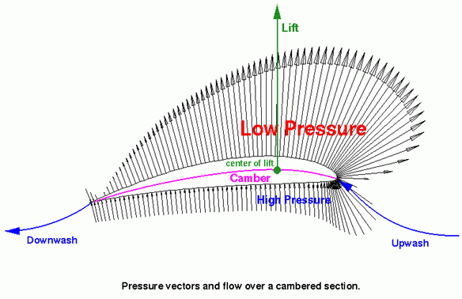
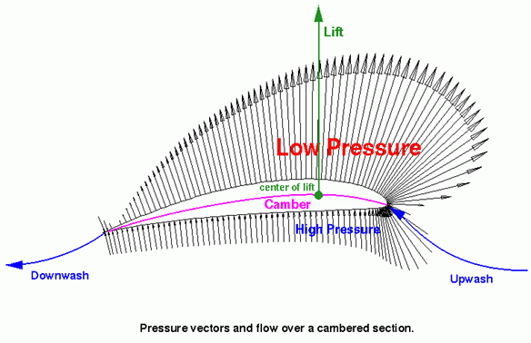

How Can Humans Fly
The Simple Way
One of the simplest ways to achieve human flight is the use of lighter than air materials. These are usually gasses that are buoyant in air because their average density is lower than that of the surrounding air. You might be familiar with many applications of this type of flight. Things like hot air ballons, blimps, and derigables all make use of lighter than air gasses in order to achieve lift.
Heavier Than Air Flight
Planes, gliders, and helicopters use a different method to achieve lift. Most of these machines make use of a special shape known as an airfoil. This is generally the shape of a wing on an aircraft. Lift is achieved as the result of the airfoil's angle of attack. The airfoil is curved to deflect oncoming air downwards resulting in a force on the airfoil in the direction oppiste to the deflection. Remember back to your highschool physics and recall Newton's Laws. Cambered airfoils can generate lift at zero angle of attack by creating curved flows of air around the wing. This results in lower pressure on one side of the wing and higher pressure on the other. If you recall Bernoulli's principle, the lower pressure on top of the wing results in a higher average velocity of air flow, and the higher pressure on the bottom of the wing results in slower average velocity of air flow.
 
